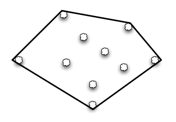

The world-renowned mathematician Dr. J.R.R "Bob" Dobbs has collected rocks for years and has built up quite a substantial collection, which he keeps scattered throughout his backyard. Unfortunately, after an interview with the local newspaper, thieves have been trying to steal his precious stones, and so Dr. Dobbs has called the Convex Fence Company to build a fence around them for him.
His instructions to the Convex Fence Company were very precise. Being very proud of his collection, he's instructed that the Convex Fence Company make sure that no matter where he's standing in his yard, the fence doesn't block the view. Below is an example of a possible fence.
A happy Mr. Dobbs 
The above fence has five sections. The Convex Fence Company sells their fence by the meter, and so charges the client for a full meter even if they only use a portion of one for a section. That is to say, if the above sections were 4.3m, 4.9m, 2.6m, 5.1m and 1.8m long, the Convex Fence Company would charge them for 5m, 5m, 3m, 6m and 2m for a total of 21m of fencing - even though they really only used 18.7m of fence. (The real thieves are made known!)
Given that fencing costs m dollars per meter, what is the minimum that such a setup will cost? Note that sections of the fence can only be built in a straight line, and assume that rocks take up only a point.
The input file is DATA4.txt. The following format will be repeated five times within the file, each time describing
a different setup of rocks in Mr. Dobbs' backyard:
Line 1: Positive integer R ≤ 1000, the number of rocks in Mr. Dobbs' collection.
Line 2: Positive integer m ≤ 50, the cost in dollars per meter of fence.
Lines 3 to 2+R: Positive integer X, followed by a space, followed by positive integer Y, representing the location of one of Dobbs' rocks (coordinates given in meters). (X, Y) ≤ (1000,1000)
The output file OUT4.txt will contain 5 lines, a formatted string per line -- the cost to fence Mr. Dobbs' rocks.
Note: the formatted string for the output is in the form $abc.00.
4
5
1 1
4 1
1 4
2 2
$55.00
Note: $55.00 = (3m + 3m + 5m)*($5.00/m)